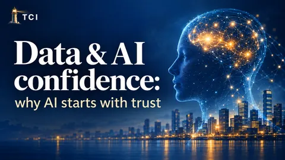

Issue 6
Data & AI confidence: why AI starts with trust
An incomplete record can change who gets an opportunity. Trust in AI starts with the data, decisions and accountability behind its output.
Transformation Confidence Briefing
A concise executive briefing from Akeel Advisory on transformation value, technology platforms, delivery systems and leadership confidence.
Published issues remain available through the links below. Follow the newsletter on LinkedIn for future editions.
Open the newsletter on LinkedInWhat to expect
Evidence, assurance and leadership decisions.
Operating models, product thinking and business value.
Delivery systems, culture and operational performance.
Governance, accountability and organisational change.